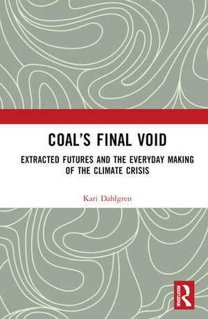

Kari Dahlgren is an anthropologist at Monash University. She studies how people and communities navigate uncertain futures in the context of contested energy and industrial transitions in Australia.
Her research examines the social and ethical dimensions of energy production, consumption, and transformation in Australia, bringing together the anthropology of energy, futures anthropology, and the study of industrial transformation.
Her recently published monograph, Coal’s Final Void: Extracted Futures and the Everyday Making of the Climate Crisis (2025), draws from ethnographic research in Australian coal regions to trace the complex social, ethical, and political dynamics that sustain fossil fuel economies. It examines the contradictory ways communities, workers, and industry lobbyists navigate the anticipated end of coal, and theorises the “final void” as a site where extractive pasts and speculative futures are held in tension.
She has an ongoing program of research on energy futures, including collaborative projects with industry and policy partners that explore changing patterns of household energy demand and interdisciplinary scenario-building such as the Digital Energy Futures and Scenarios for Future Living projects, which integrate ethnographic research into energy system planning.
She also studies industrial decarbonisation in Australia, revealing how decarbonisation is unfolding through processes of addition and infrastructural layering, in which “old” and “new” systems coexist and intersect. Her research is broadly concerned with how futures are anticipated and negotiated, and with the uneven effects that follow.
kari.dahlgren@monash.edu · Google Scholar · ORCID · LinkedIn
Research projects
- 2025–2029Hydrogen Hub Futures
How the hydrogen hub model for industrial decarbonisation in Australia is imagined, contested, and lived.
- 2025–2028Embedding Net Zero Carbon Emissions in Northern Australia
An ethnography of the professionals working in carbon emissions generation, mediation and mitigation in the Northern Territory.
- 2014–2019Precarious futures in Australian coal mining towns
Studying those whose lives are entangled with the coal industry, and the everyday making of the climate crisis through moral accusation.
- 2024–2027Scenarios for Future Living: Putting People at the Centre of the Energy Transition
Ensuring households, everyday practices and social justice are embedded in energy transition forecasting and planning.
- 2021–2023Future Home Demand
Anticipating energy and everyday life trends across three Victorian electricity networks.
- 2019–2023Digital Energy Futures
How digital technologies and changing home life will shape future household energy demand.
- 2024–2025Digital Future Schools: AI and Energy Curriculum for Future Learning
Working with school students to imagine how AI and energy will shape the schools of the future.
- 2024Household Energy Glossary
Improving communication within the energy sector, and between the sector and everyday people.
- 2020–2021Victoria's retail energy market reforms
Qualitative research into consumer outcomes following energy market reforms in Victoria.
- 2020
Publications
Book

Coal’s Final Void: Extracted Futures and the Everyday Making of the Climate Crisis
Based on two years of participant observation in Australian coal mining communities, including with coal miners and pro-coal lobbyists, the book explores climate change as an ethical problem entangled with livelihoods, identities and futures.
Journal articles
- 2026
- 2025
- 2025
- 2025
- 2025
- 2025
- 2024
- 2023
- 2023
- 2023
- 2023
- 2023
- 2022
- 2022
- 2022
- 2022
- 2022
- 2021
- 2021
- 2019
Book chapters & reviews
- 2022
- 2022
- 2020
- 2019
- 2015
Reports
- 2026
- 2026
- 2025
- 2024
- 2023
- 2023
- 2022
- 2022
- 2021
- 2021
- 2021
- 2020
- 2020
Teaching
Notice360 is an immersive 360° video and virtual reality tool for teaching ethnographic observation. It approximates the experience of being guided by a trained ethnographer through observations on campus, and runs on VR headsets, desktop and mobile. It was trialled in ATS1255 Encountering Cultures in Semester 1, 2026, where 88% of surveyed students found it more engaging than the average tutorial.
Media
Broadcast & podcasts
- Should climate change make us rethink the ethics of nuclear energy? With Waleed Aly and Scott Stephens
- Future energy use report, with Patricia Karvelas
- Report identifies future electricity usage trends
- Would you trust your utility to control your solar? With Yolande Strengers
Media coverage & op-eds
- Study seeking local voices — on Kari's research on decarbonisation and industrial communities
- Darwin's 'sustainable' Middle Arm project reveals Australia's huge climate policy gamble — with Timothy Neale and Matthew Kearnes
- Future home havens: Australians likely to use more energy to stay in and save money — with Yolande Strengers
- What does putting 'consumers at the centre' of the energy transition really mean? — with colleagues
- Technology not taxes: The problem with technology-led energy futures
- Calculating the cost of cleaning the air we breathe
- The energy costs of staying at home — with colleagues
- COVID-19, FIFO workers, and the risk facing remote mining communities
- Coal miners and urban greenies have one thing in common, and Labor must use it — with Fabio Mattioli
Film & video
- Digital Energy Futures — documentary
- Digital Energy Futures Video Archive — more than 50 clips from the research
Exhibitions
CV
Positions
- CurrentSenior Lecturer in Anthropology
- 2025–ARC DECRA Fellow
- 2024Lecturer
- 2019–2024Research Fellow
- 2019Research Associate
- 2019Teaching Associate
Education
- 2019PhD, Anthropology — London School of Economics
- 2013MSc with Distinction, African Studies — University of Oxford
- 2012BA with highest distinction and highest honours, Anthropology — University of North Carolina at Chapel Hill
Awards
- 2025ARC Discovery Early Career Researcher Award (DECRA)
- 2024Good Design Award — Gold
- 2024Advancing Women's Success Grant
- 2023SCINEMA Social Impact Award
- 2022Women in Energy Professional Development Award
- 2017Rappaport Student Prize — Finalist
- 2014–2018PhD Studentship
- 2012–2013Clarendon Scholarship
- 2012Honigmann Undergraduate Honors Thesis Award
Service & networks
- 2023–2026Co-convenor, Futures Anthropology Network
- 2023–Ordinary Director
- Associate Investigator
- Associate